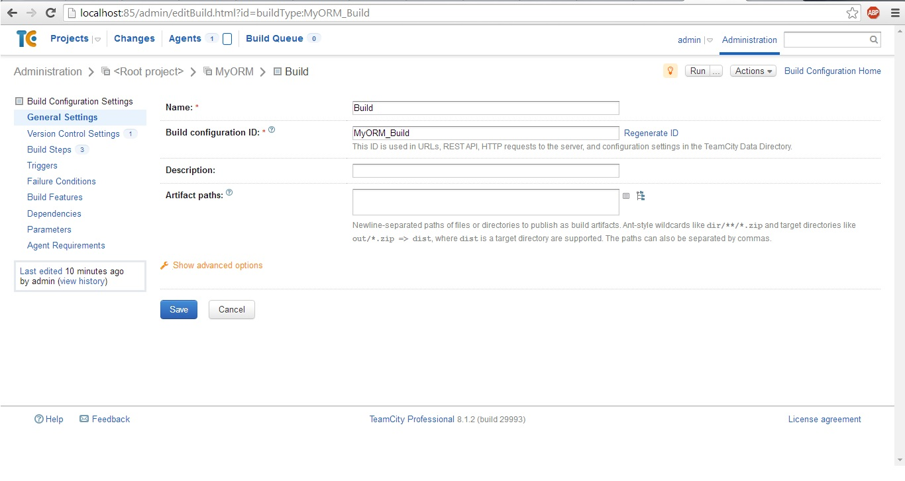
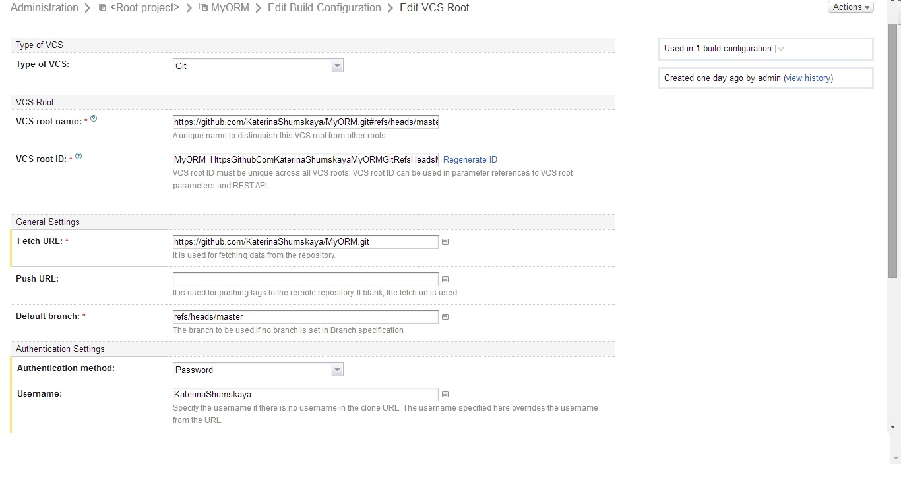
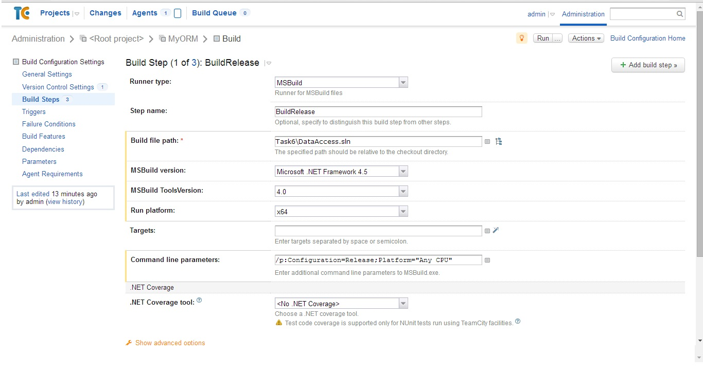
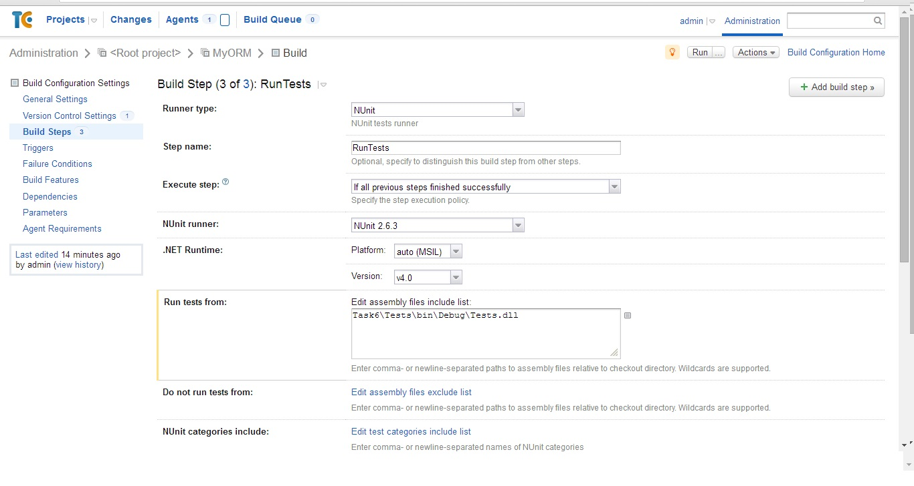
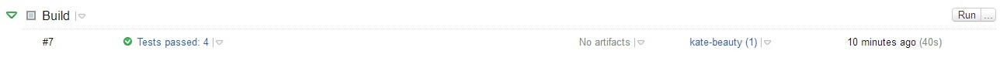
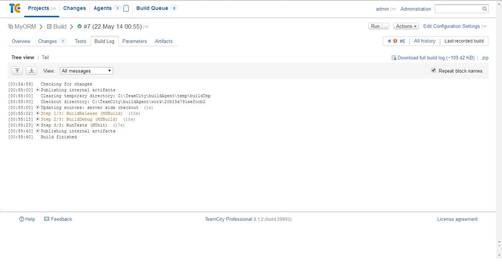

Руководство по настройке CI с использованием TeamCity
Шаг 1. Установка
Скачиваем TeamCity вот отсюда
Устанавливаем и открываем в браузере вкладку с номером порта, на которой установили TeamCity.
У меня это http://localhost:85.
Шаг 2. Создание проекта
Заходим в Administration->Projects, нажимаем "Create project".
Открывается вкладка General Settings, где мы должны задать название проекта.

Выбираем пункт VCS Roots в Project Settings, нажимаем "Create VCS Root".
Выбираем систему контоля версий. У нас это git. Идём на github, копируем оттуда
ссылку на репозиторий, вставляем её в VCS root name. Задаём имя пользователя и пароль.

Шаг 3. Настройка билда.
Заходим в General Settings-> Build Configurations. Нажимаем "Create Build Configuration".
Задаём имя конфигурации. Переходим на вкладку "Build Steps". Нажимем кнопку "Add build step".
Заполняем необходимые поля в соответствии со скриншотом приведённым ниже.

Аналогично создаём step 2 BuildDebug с параметром командной строки /p:Configuration=Debug.
Далее необходимо настроить запуск тестов. Для этого создадим ещё один шаг RunTests с
настройками приведёнными на скриншоте.

Шаг 4. Запуск билда.
Выбираем наш проект. Нажимаем "Run". Урааа! Видим, зелёную галочку, радуемся.

Можно посмотреть историю билдов, нажав на стрелочку вниз и выбрав "History".
Можно посмотреть билд-лог. У меня он получился вот такой:

Всем удачного CI!